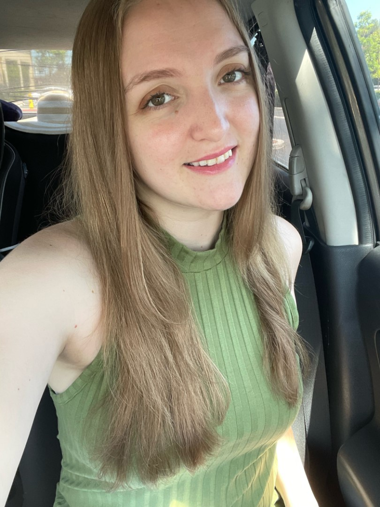

Leanne Huq
LEANNE HUQ
ABOUT ME
They say it takes 10,000 hours to achieve excellence.
When it comes to playing video games, I'm at about 2 or 3 levels of excellence.
The World of Warcraft guild I ran with [Exigence] on Dragonblight was one of the top 5 North American guilds, and 1 of 23 guilds to clear Naxxaramas 40, and one of the small handful that did it before the 2.0 TBC prepatch talent updates. I also did an extensive amount of PvP with the 'Marshal' group as we called it.
Now I am a bit more casual, being 'past my prime' as many would say, and having graduated from high school and having a full time job.
I also used to be an All-Star baseball player and Competetive Swimmer. I'm a bogey golfer, and really like playing water polo, water volleyball, sand volleyball, and ultimate frisbee. I have recently got back into fitness and am currently training for my 5th marathon. I love to travel and have seen alot of the world, but have alot more to see!
TECHNOLOGIES
MY PROJECTS

CONTACT ME
Find more of my work on GitHub